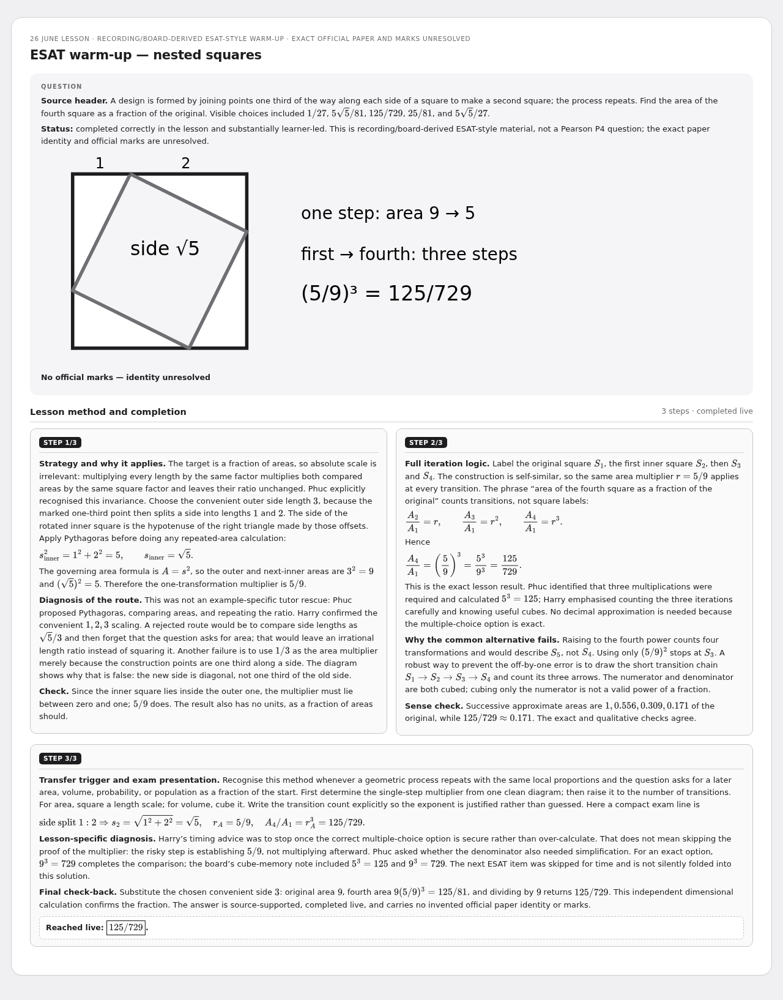
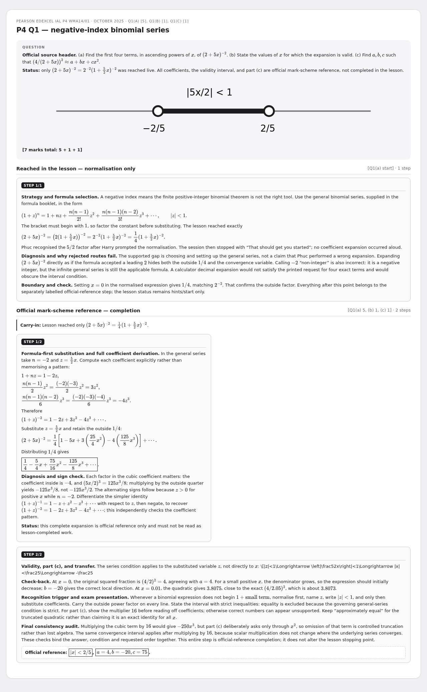
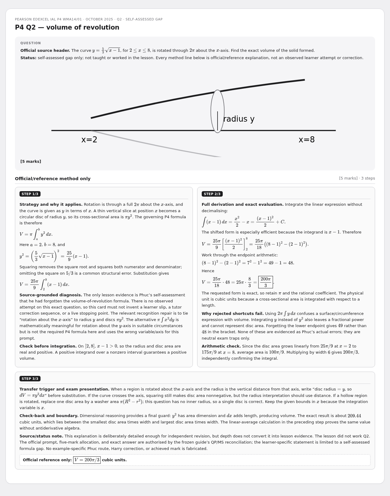
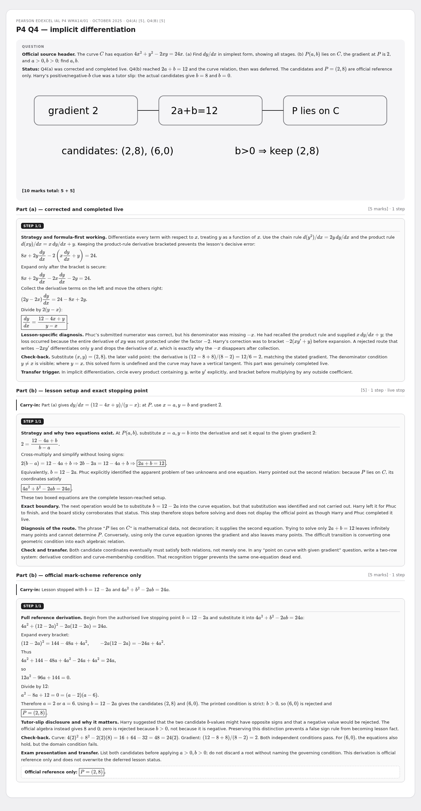
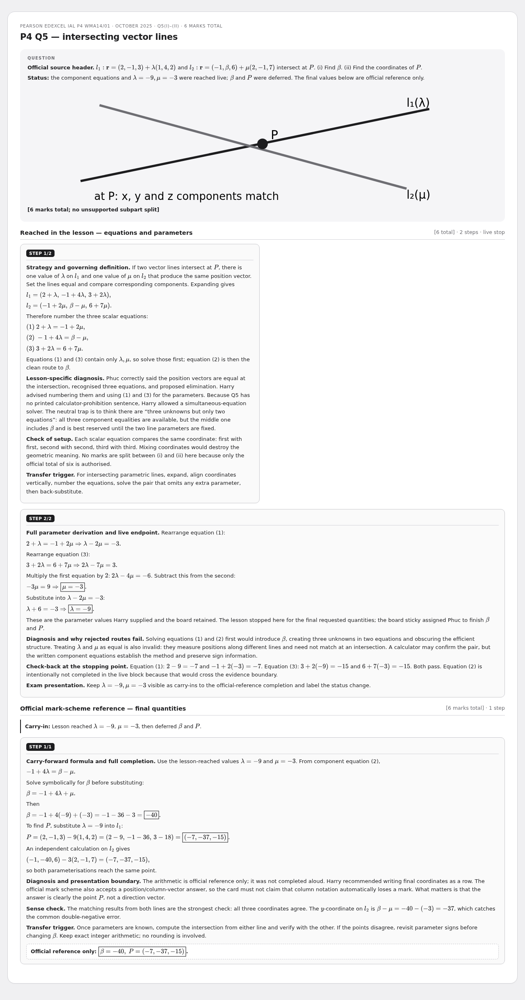
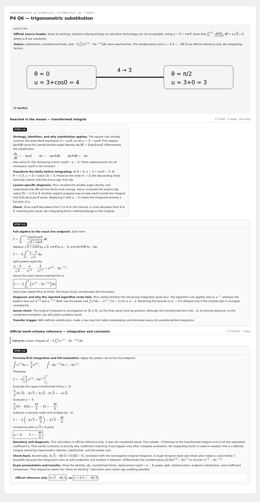
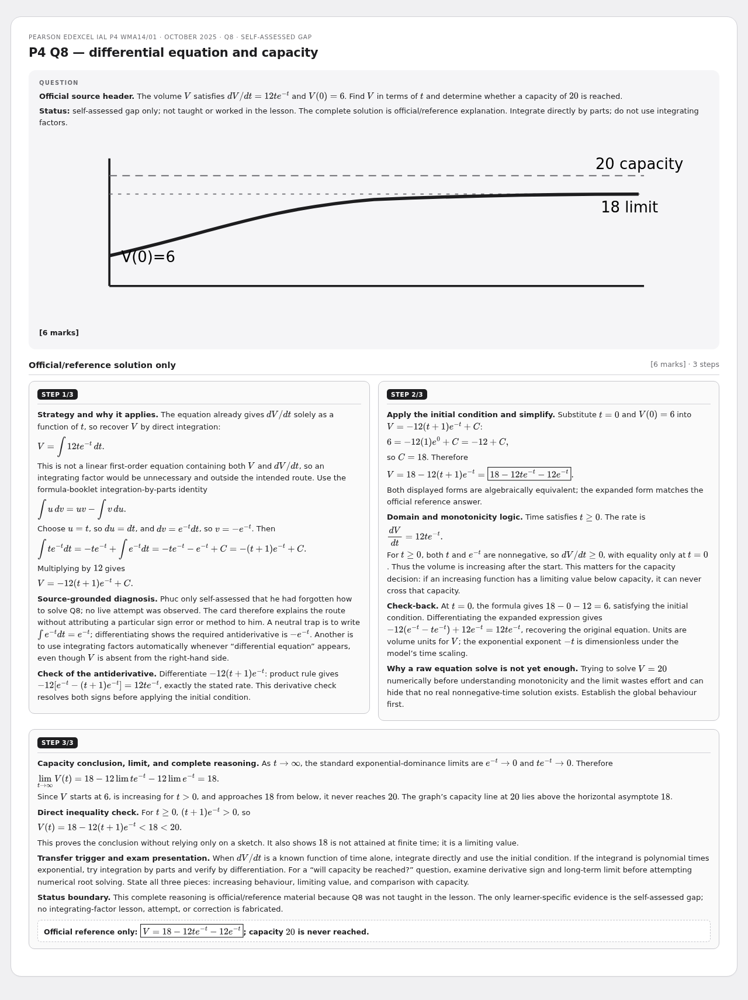

26 June P4
Seven source-frozen revision cards: lesson-completed, deferred, and self-assessed/reference-only work remain locally separated. Each PNG shows the full question header, source status, required visual and gray step boxes for image occlusion.
7 cardsWMA14/01 Oct 2025Multi-step
ESAT warm-up — nested squares

P4 Q1 — negative-index binomial series

P4 Q2 — volume of revolution

P4 Q4 — implicit differentiation

P4 Q5 — intersecting vector lines

P4 Q6 — trigonometric substitution

P4 Q8 — differential equation and capacity
